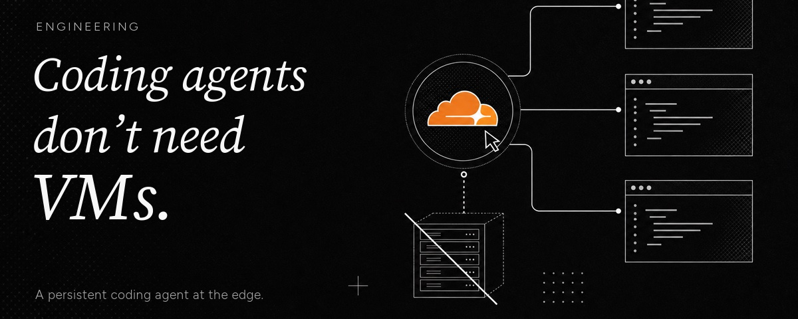

camelAI最近将其agent从虚拟机迁移到了Cloudflare Durable Object。Agent现在运行在一个Durable Object内，文件系统活在SQLite和R2中，用JavaScript而非Python编写代码。 这不是概念验证：这是他们在生产环境运行了数周的真实架构。支撑这一迁移的是Cloudflare新发布的Project Think（Agents SDK + @cloudflare/codemode + Pi集成）：Durable Objects提供每个agent独立持久化存储和零成本休眠，Codemode让LLM编写完整的JavaScript程序而非顺序调用工具，Pi提供最小化agent框架。
传统应用是一个实例服务多个用户。餐厅有一份菜单和一个优化为大批量出餐的厨房。一个agent更像一个私人厨师：不同的食材、不同的技法、不同的工具，每次都不一样。 如果一亿知识工作者每人使用一个agentic助手，即使只是在中等并发下，你也需要数千万个同时活跃的会话：按当前每容器成本计算不可持续。

VMs/容器在空闲时仍然消耗全额计算成本，每个实例始终在线。Durable Object将开销从「始终在线」变为「按需唤醒」。一个休眠的DO不消耗计算资源。当请求、WebSocket、定时器或邮件到达时，平台唤醒agent，加载状态，处理事件，然后继续休眠。1万个agent各活跃1% 的时间 → 任何时候只有 ~100个实例在线，而非1万个。
附带的内置特性：每个agent有自带SQLite数据库（无需外部存储）、平台自动处理恢复（状态不丢失）、内置身份与路由。这在VM/容器上需要自己构建进程管理器、健康检查、负载均衡和粘性会话。
LLM调用需要30秒，多轮agent循环运行更久。在这段时间内执行环境随时可能消失：部署、重启、资源限制。上游到模型提供商的连接被永久切断，内存中的状态丢失。runFiber() 解决了这个问题。 一个fiber是持久函数调用：执行开始前注册在SQLite中，可在任意点通过stash() 做检查点，在重启时通过onFiberRecovered恢复。
如果agent在循环到第5步时崩溃，恢复后从第5步继续：stash的数据（findings、step、topic）完好无损。SDK在fiber执行期间自动保持agent活跃。对于以分钟计的工作，keepAlive() 防止驱逐；对于更长的操作（CI流水线、设计评审），agent启动工作、持久化job ID、休眠、在回调时唤醒。
传统的工具调用有一个尴尬的形状。模型调用一个工具，把结果拉回上下文窗口，再调用另一个工具，拉回结果：如此反复。100个文件意味着100次通过模型的往返。模型更擅长编写代码来使用系统，而非玩工具调用的游戏。
@cloudflare/codemode实现了这一洞察：LLM编写一个完整的程序来处理整个任务。例如查找所有包含TODO的TypeScript文件：执行一次JS程序，而不是100次LLM往返。Cloudflare API MCP服务器只暴露两个工具（search和execute），消耗 ~1,000 tokens，而等价的逐工具端点方式消耗约117万tokens：减少了99.9%。 这对token节省是革命性的。
Dynamic Worker提供了安全的代码执行环境：毫秒级启动的V8 isolate，几MB内存。比容器快约100倍、内存高效约100倍。关键设计是能力模型： 从几乎没有默认权限（无网络访问）开始，显式授予每种资源。这引出了一个自然的五级计算环境：
0级：Workspace：基于SQLite+R2的持久虚拟文件系统。1级：Dynamic Worker：沙箱JS isolate，无网络。2级：添加npm：esbuild打包后加载。3级：无头浏览器（Browser Run）。4级：完整Sandbox。核心原则：agent在0级单独就可用，每级累加。 用户根据需要添加能力，而不是一开始就被迫处理所有复杂性。
Pi Agents SDK还提供了会话API（父子ID树形存储对话，支持分叉和压缩）和Facet子agent（每个有独立SQLite + 执行上下文，通过RPC协作，类型安全）。
Agent的规模经济与Web应用完全不同。 Web应用是一个后端服务成千上万的用户。Agent是每个用户/每个任务/每个线程一个agent：这是1:1的模型。Durable Objects的按需唤醒使这种模型在经济上可行。
从工具调用到代码执行的范式转变同样重要。Codemode不仅减少了token消耗，还改变了agent与系统的交互方式：不是通过API端点的胶水代码，而是通过真实的编程。如果你正在为agent设计后端，问自己这个关键问题：是让你的agent在你的系统上运行，还是让你的agent成为你的系统？ Durable Objects的actor模型让前者自然过渡到后者。
参考：https://x.com/Vercantez/status/2082138839888589200